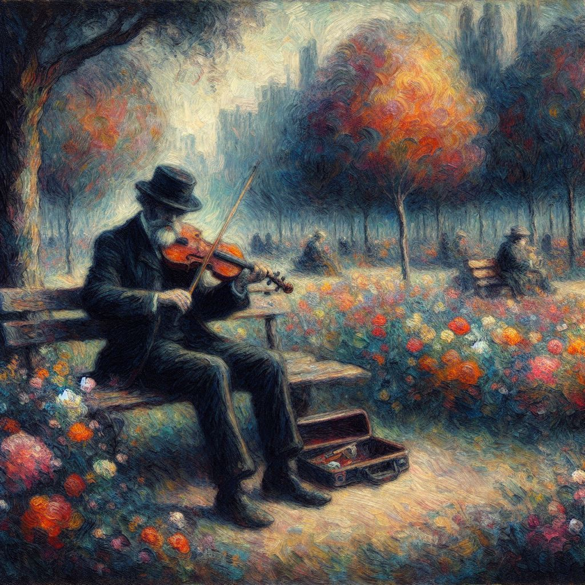

Music MoodAI
Home
DataViz
ExplainAI
Others
Infelizmente, a banda 404 ainda não chegou, mas as outras páginas estão brilhando!
"Será só imaginação? Será que nada vai acontecer?"
- Legião Urbana

BACK